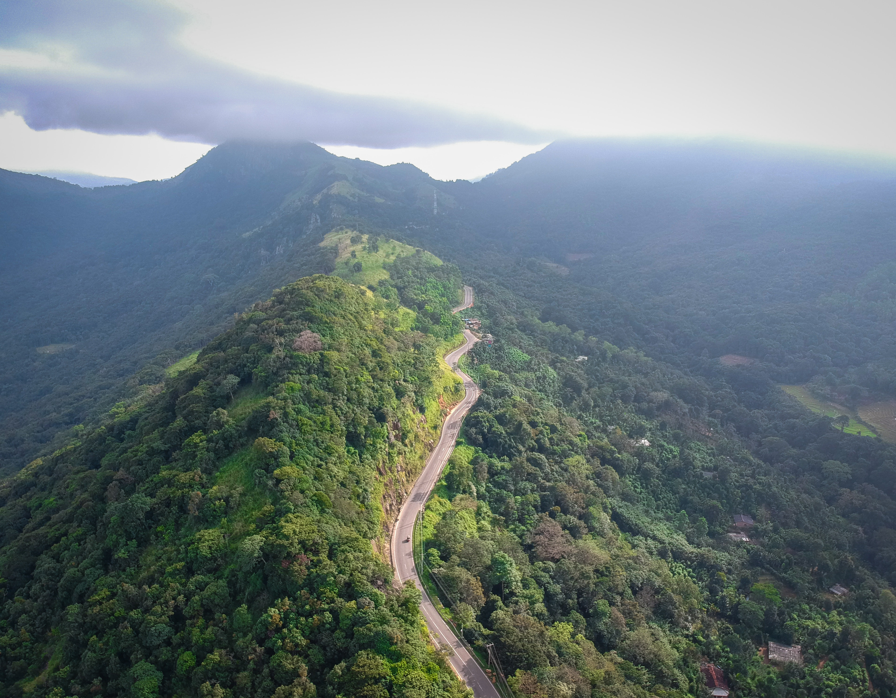
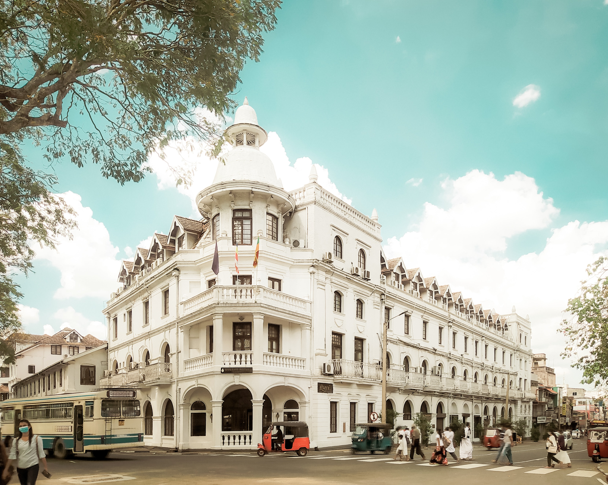

Climate
With Kandy located in the centre of the island and in a high elevation, the city has a relatively wetter and cooler temperatures than that of the tropical climate of the rest of the country, especially the coastal regions. Nuwara Eliya is south to it and has a cooler climate due to its higher elevation. Nevertheless, Kandy's climate is still tropical as mean temperatures year round are above 18 °C on average. The city does experience a drier period from January to April. From May through to July and October to December the region experiences its monsoon season, during this time the weather is rough and unstable. From March through the middle of May is the intermonsoonal period, during this time there is light rain and strong humidity. The humidity is generally between 70% to 79%.
Cityscape
The city of Kandy lies at an elevation of 465 metres (1,526 ft) above sea level. Its plan developed around two open spaces: an elongated square, at the end of which are the administration buildings of the old capital, and an artificial lake that is quadrangular in form. A public garden adds to the openness of the city's spatial organization. Kandy has now grown out to encompass Peradeniya, home to the University of Peradeniya and the Botanical Gardens, Katugastota to the north, and east to Kundasale, Tennekumbura and Gurudeniya.
Temple of the Tooth
.jpg)
Temple of the Tooth, known as the Sri Dalada Maligawa. Reconstructed in the 18th century, the Sri Dalada Maligawa is built on a base of granite that was inspired by the temples of Sri Lanka's former capital city, Anuradhapura. An array of materials (limestone, marble, sculpted wood, ivory, etc.) contribute to the richness of this temple. Throughout this small holy city, a number of recent Buddhist monasteries can be found.
The monumental ensemble of Kandy is an example of construction that associates the Royal Palace and the Temple of the Tooth (Palace of the tooth relic) is the place that houses the relic of the tooth of the Buddha. Originally part of the Royal Palace complex of the Kandyan Kingdom, it is one of the holiest places of worship and pilgrimage for Buddhists around the world. It was the last of a series of temples built in the places where the relic, the actual palladium of the Sinhalese monarchy, was brought following the various relocations of the capital city.
Parks and Gardens

The Royal Botanical Garden, Peradeniya is situated about 5 km to the west of the city centre at Peradeniya and is visited by 2 million people per year. It is the largest botanical garden on the island extending to 147 acres (59 ha) and containing over 4000 species of plants. Knuckles Mountain Range in Kandy is a world heritage site of UNESCO. Alagalla Mountain Range also named in English as Potato Range both famous for trekking in Sri Lanka. The Udawatta Kele (Udawatta Forest) is a protected sanctuary situated in the heart of the city, just north of Temple of the Tooth. Known as "Uda Wasala Watta" in Sinhala meaning, "the garden situated above the royal palace", it was designated as a forest reserve in 1856, and it became a sanctuary in 1938.